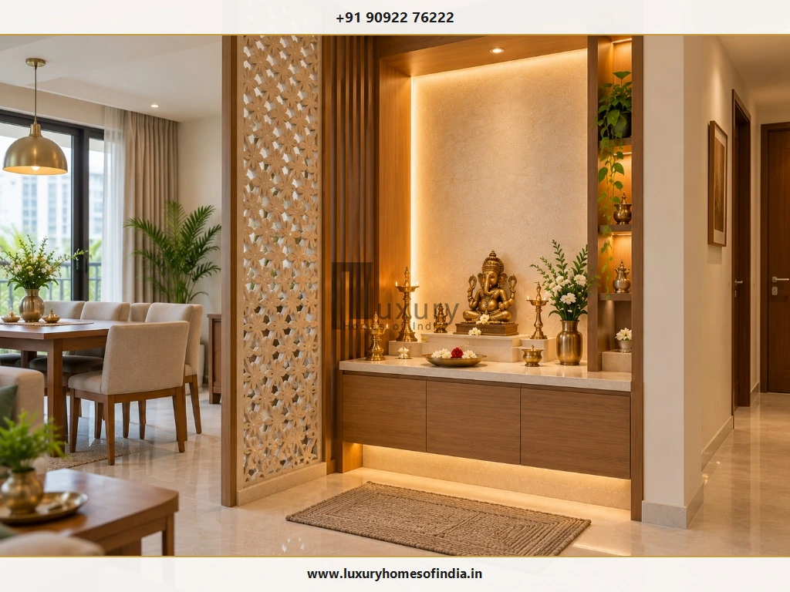
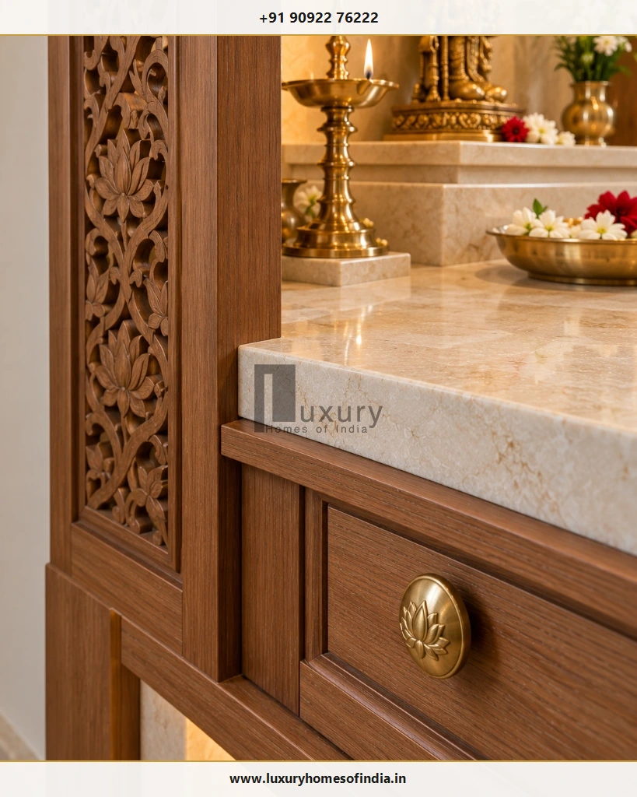
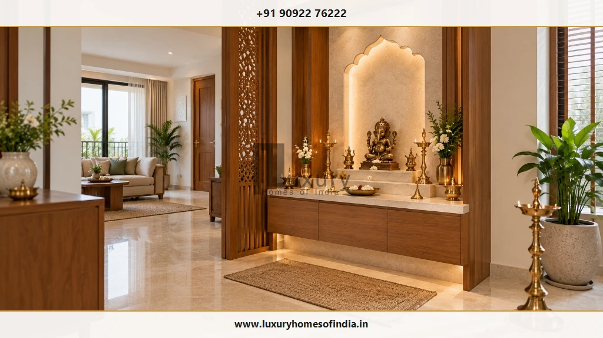
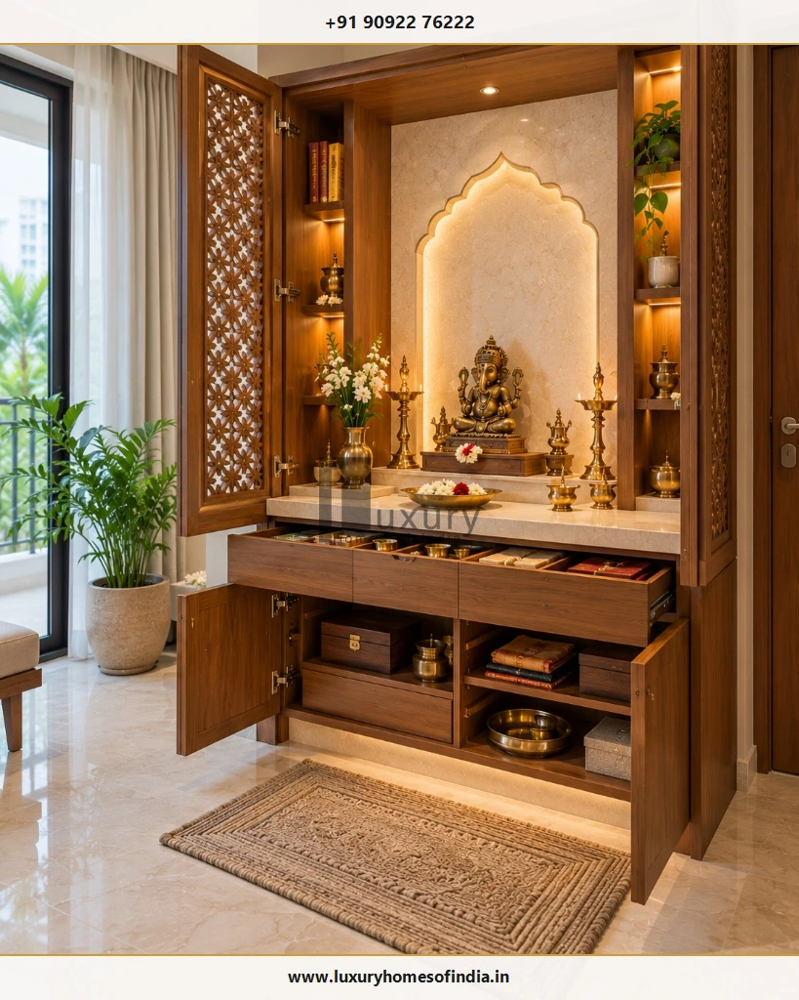

Executive Summary: Balancing Sacred Devotion with Practical Design
A well-planned pooja room design for home brings together devotion, thoughtful architecture and everyday functionality. Whether you are designing a spacious independent villa, a luxury duplex or a compact apartment, the right mandir creates a peaceful sanctuary for daily prayer without sacrificing precious floor space or obstructing household circulation.
Popular configurations range from traditional carved timber temples and bespoke marble mandirs to minimalist wall-hung altars and recessed prayer niches. The ideal solution depends on your room dimensions, family rituals, material choices, lighting layers, and daily storage requirements. For homeowners planning a new residence in Chennai or across Tamil Nadu, coordinating the pooja space within your early architectural floor plans and custom interior execution avoids costly on-site alterations during civil fit-out.
A well-planned pooja room design for home brings together devotion, thoughtful architecture and everyday functionality. Whether you are designing a spacious villa, an independent house or a compact apartment, the right mandir can create a peaceful place for prayer without wasting valuable floor space. Popular options include traditional carved wooden temples, marble mandirs, minimalist wall-mounted units and recessed prayer niches. The best choice depends on your available space, family traditions, preferred materials, storage needs and daily rituals. Before selecting finishes, decide where the altar will sit, how people will approach it, where lamps will be used and how the space will be cleaned and ventilated. For homeowners planning a new house in Chennai or elsewhere in India, coordinating the pooja room with the architectural layout and interior design from the beginning can help prevent avoidable changes during construction and fit-out.

1. How to Choose the Right Pooja Room Design
Start with the way your family uses the prayer space, rather than choosing a decorative style first. Every household has unique rituals, from solitary morning meditation to extended family gatherings during Diwali, Pongal, and festive pujas.
For a Traditional Home
Consider carved solid teakwood, a defined tiered altar, ornate brass temple accessories, and carefully scaled architectural detailing like shikhara tops and temple pillars.
For a Contemporary Home
Explore a simple stone or timber mandir, restrained neutral finishes, hidden storage, flush-mounted LED profiles, and discreet perimeter lighting.
For a Compact Apartment
A wall-mounted floating cabinet, recessed drywall niche, or laser-cut jaali screened prayer corner preserves valuable circulation space while establishing a sacred precinct.
For a Luxury Interior
Prioritise seamless material coordination, imported marble cladding, bespoke joinery, intelligent DALI lighting scenes, and concealed ventilation over excessive ornamentation.
Before finalising the design, establish the available dimensions, the position of the deities, the worshippers' standing or seating arrangement, and the items that must be stored nearby. Knowing whether devotees will sit cross-legged on a floor rug or stand during daily prayer fundamentally influences the altar height and drawer depths.
2. Modern Pooja Room Design Ideas
Modern pooja rooms combine familiar devotional elements with simpler architectural forms, coordinated materials, and practical storage solutions. Contemporary architecture focuses on tranquility, visual calm, and ease of daily cleaning.
Minimalist Mandir
A simple altar with a restrained backdrop can work exceptionally well in contemporary open-plan interiors. Ivory, beige, off-white, and natural wood tones provide a neutral setting, while a small number of carefully placed decorative elements keep attention focused on the sacred altar.
Wall-Mounted Mandir
A floating unit can preserve valuable floor space and make routine floor sweeping and wet-mopping significantly easier. When engineering a wall-mounted mandir, its brackets, mechanical fixings, and supporting brickwork or RCC wall must be structurally verified for the full installed load—including heavy stone idols, brass lamps, and prayer accessories.
Recessed Pooja Niche
A recessed wall niche can establish a beautifully framed prayer area within an existing living, dining, or circulation space. Before executing the niche, confirm the wall construction, available depth (typically 9 to 15 inches), electrical conduit routing, lighting driver access, and ensure no plumbing waste lines run directly behind the proposed alcove.
Jaali Partition
A decorative CNC-cut timber or brass-finished screen distinguishes a prayer corner from active living or dining areas without blocking natural air circulation or daylight. Select the material and openness ratio of the pattern to balance privacy, ease of dust cleaning, and aesthetic harmony with the surrounding interior.
Backlit Backdrop
Backlit onyx, translucent alabaster, or custom corian carved panels create an ethereal focal point behind the mandir. Always keep electrical transformers and LED strips accessible through demountable service panels, and ensure all lighting equipment and finishes are rated for heat, oil, and smoke conditions.

3. Traditional Pooja Room Design for Indian Homes
Traditional mandirs celebrate timeless Indian craft traditions by incorporating carved wood, ornamental gopuram motifs, brass bells, and hand-finished stone platforms. The single most important consideration is proportion: the mandir should suit the room dimensions and accommodate daily worship comfortably without visually overwhelming the home.
Carved Wooden Mandir
Solid seasoned teakwood, rosewood, or sheesham provide natural warmth and longevity. Choose a structure that accommodates the family's primary idols, framed pictures, and brass ritual trays. Always leave generous clearances around the altar for daily cleaning, and ensure combustible timber finishes are not located in direct contact with burning camphor or ghee lamps.
Stone Altar
White Makrana marble, Vietnamese marble, and polished black or flamed granite are enduring choices for altar platforms and deity pedestals. Confirm the stone slab's thickness (minimum 20mm to 30mm for cantilevered or stepped shelves), support framing, chemical stain resistance against turmeric and kumkum, and seal with a breathable penetrating stone sealer.
Brass and Decorative Elements
Hanging brass bells (ghanti), deepam pillars, antique hardware pulls, and urli vessels infuse classic South Indian heritage. Coordinate the metal finish (brushed brass, antique gold, or polished brass) with adjacent door handles and joinery, ensuring hanging lamps maintain safe swinging clearances away from walls.
Traditional Architectural Detailing
Cusped arches, turned timber pillars, kalash finials, and jaali shutters reinforce traditional temple architecture. Use these elements selectively and coordinate their scale with your ceiling height, floor area, and wider architectural framework.

4. Luxury Pooja Room Design: Materials, Proportion and Finish
A luxury pooja room is not defined by sheer square footage alone. The refinement of material selection, precision of joinery tolerances, interplay between architectural light and tactile surfaces, and effortless everyday usability collectively define a truly high-end prayer space.
| Design Element | Possible Approach | What to Check |
|---|---|---|
| Altar Platform | Seamless Italian marble (Statuario/Bottochino), granite or seasoned teakwood | Dead load support, stain sealing against turmeric/oil, flame separation and edge bullnosing. |
| Backdrop Wall | Fluted natural stone, bookmatched marble, etched brass or carved timber screen | Concealed joint detailing, ease of soot wiping, and access to rear LED power drivers. |
| Custom Cabinetry | Solid timber drawers with soft-close Blum runners or moisture-resistant marine-grade plywood | Structural fixings, anti-tarnish interior linings, and safe vertical clearance from open flames. |
| Metal Accents | Custom cast brass hardware, gold PVD trims, or hand-beaten bronze panels | Protective lacquer coating to prevent rapid oxidation and tarnishing from daily incense smoke. |
| Lighting Design | Concealed 2700K warm LED channels, high CRI mini-spots, and automated scene dimming | Glare shielding from devotee seated line-of-sight, accessible drivers, and heat insulation. |
Always review physical material mockups together under both morning natural daylight and warm artificial evening illumination. A coordinated palette paired with immaculate execution creates enduring grandeur without unnecessary visual noise.
5. Small Pooja Room Design for Apartments
A compact prayer space in a Chennai apartment or compact residence can be both spiritually uplifting and exceptionally practical when every inch is planned with precision.
- Use the wall efficiently: A wall-mounted floating temple or shallow recessed niche preserves 100% of the floor footprint, facilitating daily vacuuming and floor cleaning. Verify mechanical anchor bolt capacities in masonry walls.
- Add practical concealed storage: Incorporate pull-out lower drawers with partitioned trays for dhoop sticks, matchboxes, wick bundles, cotton, and holy books. Keeping daily items tucked away maintains visual serenity.
- Check door and drawer movement: Bi-fold jaali shutters or pocket doors preserve walkway clearance when opened during prayer sessions. Ensure the swing radius does not collide with adjacent furniture or corridor paths.
- Protect circulation space: Prayer corners must never impede egress routes or family pathways between living, dining, and foyer areas.
- Plan ventilation and lamp placement early: If daily rituals involve oil lamps, camphor, or incense, install a silent micro-exhaust fan or position the mandir near a operable external window to prevent smoke accumulation.
6. Pooja Room Placement and Vastu Considerations
Many Indian households consider Vastu Shastra principles when planning a pooja room. In classical architectural tradition, the north-east corner (Ishanya Kona) is widely regarded as the most auspicious sector, drawing gentle morning solar energy and fostering peace. East and north orientations are also commonly recommended as functional alternatives.
Architectural & Vastu Coordination Points
When discussing your pooja layout with your architect or interior designer:
- Confirm the actual compass orientation directly on the survey drawing and architectural layout.
- Respect the family's customary worship traditions and daily rituals.
- Plan the geometry so that devotees face east or north while praying, with deities positioned facing west or south.
- Check clearances for seated meditation and standing aarti rituals.
- Review acoustic and service separation: avoid sharing walls with toilets or locating mandirs directly beneath staircases.
- Avoid major structural alterations to load-bearing columns or shear walls without certified structural engineering review.
For an exhaustive, step-by-step examination of directional rules, idol heights, and room configurations, read our detailed companion guide: Pooja Room Placement as per Vastu: Best Direction, Idol Position and Planning Tips.
7. Best Materials for Pooja Room Interiors
The choice of materials directly impacts the prayer room's visual grace, ease of maintenance, stain resistance, and long-term durability.
| Material | Common Design Application | Key Architectural Consideration |
|---|---|---|
| Wood (Teak / Engineered) | Outer mandir frames, carved jaali shutters, ceiling rafters, and base storage cabinetry. | Moisture sealing against wet offerings; maintain mandatory clearances from open flame sources. |
| White Marble | Altar platforms, deity pedestals, wall cladding, and stepped shrine shelves. | Porous stone requires penetrating impregnating sealers to prevent permanent oil and turmeric discoloration. |
| Granite | Heavy base counters, aarti preparation trays, and flooring thresholds. | Superior heat and scratch resistance; extremely durable and effortless to wipe clean. |
| Vitrified Tiles | Accent wall backdrops and surrounding flooring in modern apartments. | Non-porous, highly resistant to soot and oil, with anti-skid floor variants providing safe footing. |
| Brass & Bronze | Bells, oil lamps, deepam pillars, flower bowls (urlis), and hardware handles. | Select clear-lacquered brass to minimize tarnishing; arrange with dedicated heat-insulated stands. |
| Toughened Glass | Protective countertop toppers, frosted backdrop panels, or showcase display shelves. | Requires heat-resistant tempered specification and secure structural brackets away from burning wicks. |
8. Pooja Room Colour Combinations
Colours in a sacred prayer space should encourage mental stillness, complement the adjoining interior palette, and prove practical to maintain over years of daily ritual use.
Palette 1 Ivory, Warm White & Gold
A classical, luminous palette that maximizes natural illumination and provides an immaculate backdrop for brass deities and marble surfaces.
Palette 2 Rich Teak & Muted Cream
A balanced, timeless combination that pairs the warmth of natural wood grain with soft cream walls, suitable for both contemporary and heritage homes.
Palette 3 Beige, Sandstone & Antique Brass
An understated, grounding earth-toned scheme that evokes the tranquility of ancient stone temple corridors with subtle metallic reflections.
Palette 4 Monochromatic Natural Stone & Fluted Wood
An architectural luxury approach where tonal variation arises from tactile materials rather than heavy applied paints.
Always sample paint swatches and stone finishes in the actual room under daylight and 2700K evening illumination. Avoid high-gloss reflective dark walls that amplify glare or highlight stray soot marks.
9. Pooja Room Lighting Design: Layers & Ergonomics
Pooja room lighting must balance functional clarity for reading sacred texts and handling ritual offerings with a warm, serene glow that emphasizes the spiritual focal point without producing glare.
- Ambient Lighting: Soft, indirect general illumination from ceiling cove profiles or wide-beam warm downlights (2700K to 3000K) ensures comfortable visibility across the room for daily movement and cleaning.
- Accent Lighting: Concealed warm LED backlighting behind arched niches or carved panels highlights the silhouette of sacred idols, creating depth and visual focus.
- Task Lighting: Focused, low-glare downlights positioned directly over the aarti preparation counter illuminate scripture pages and brass trays during rituals.
- Natural Daylight: Where architectural layouts permit, a frosted or clerestory window welcoming morning eastern or northern sunlight infuses fresh energy and reduces daytime artificial lighting demands.
- Electrical Safety & Conduit Coordination: Keep all concealed electrical wiring, switchboards, and low-voltage LED drivers isolated from heat, water, and oil. All installations should follow IS code standards.

10. Diya Placement, Ventilation and Fire Safety
Because the pooja room involves daily open flames, camphor burning, and incense smoke, safety protocols must be integrated into the architecture rather than treated as an afterthought.
Critical Fire Safety & Smoke Protocols
- Stable, Non-Combustible Bases: Always place oil lamps and brass diyas on granite, marble, or brass trays—never directly on bare wood or laminate surfaces.
- Clear Overhead Clearances: Never position burning lamps directly underneath overhead wooden shelves or inside enclosed cabinets. Maintain a minimum 24-inch vertical clearance.
- Fabric & Curtain Separation: Keep loose window curtains, hanging wall tapestries, and prayer garments strictly away from open flame radii.
- Dedicated Smoke Exhaust: For enclosed pooja spaces where dhoop or sambrani is burned regularly, integrate a silent low-noise inline exhaust fan near the ceiling.
- Immediate Oil Cleaning: Spilled ghee or oil presents both a slip hazard and a fire vector. Keep microfiber cleaning cloths stored safely in an adjacent drawer.
- Unattended Flame Warning: Never leave lit oil lamps or camphor burning unattended when departing the home or retiring for the night.
11. Storage and Daily-Use Planning
Storage is far easier and more cost-effective to incorporate before custom cabinetry is fabricated than attempting to add organizers after the mandir is installed.
Carefully catalog what your family uses daily: prayer books (shlokas, Gita), brass trays, aarti spoons, agarbatti boxes, oil containers, wicks, camphor, bell, conch, and seasonal festival ornaments. Group these items logically into:
Accessible Daily Drawers
Shallow pull-out drawers (4 to 6 inches deep) directly beneath the altar counter equipped with custom felt-lined or acrylic dividers for wicks, matches, camphor, and agarbatti packets.
Enclosed Lower Cabinets
Deep lower cabinets (12 to 18 inches deep) for bulk oil containers, brass polish, spare diya vessels, festive brass urlis, and holy books.

12. Pooja Room Design Mistakes to Avoid
Before approving architectural drawings or interior carpentry quotes, cross-check your plans against these common residential pitfalls:
13. Pooja Room Planning Checklist
Review this comprehensive 12-point checklist with your architect and interior design team prior to civil execution and joinery fabrication:
Frequently Asked Questions
Conclusion: Designing a Sacred Sanctuary for Generational Harmony
The best pooja room design for home balances family traditions, appropriate placement, well-chosen materials and everyday usability. From an intricately carved wooden temple to a contemporary marble mandir or compact apartment prayer corner, careful planning helps integrate the prayer space seamlessly with the rest of the home.
For homeowners embarking on a new house construction in Chennai or across India, coordinate the mandir with the architectural layout, interior finishes, lighting, ventilation and storage before construction and fabrication progress too far. This gives the design team an opportunity to resolve practical requirements before they become expensive changes on site.
Planning Your Custom Home Mandir in Chennai?
Collaborate with Luxury Homes of India's architectural and interior design specialists to create a serene, Vastu-harmonious pooja space tailored to your family's rituals and lifestyle.